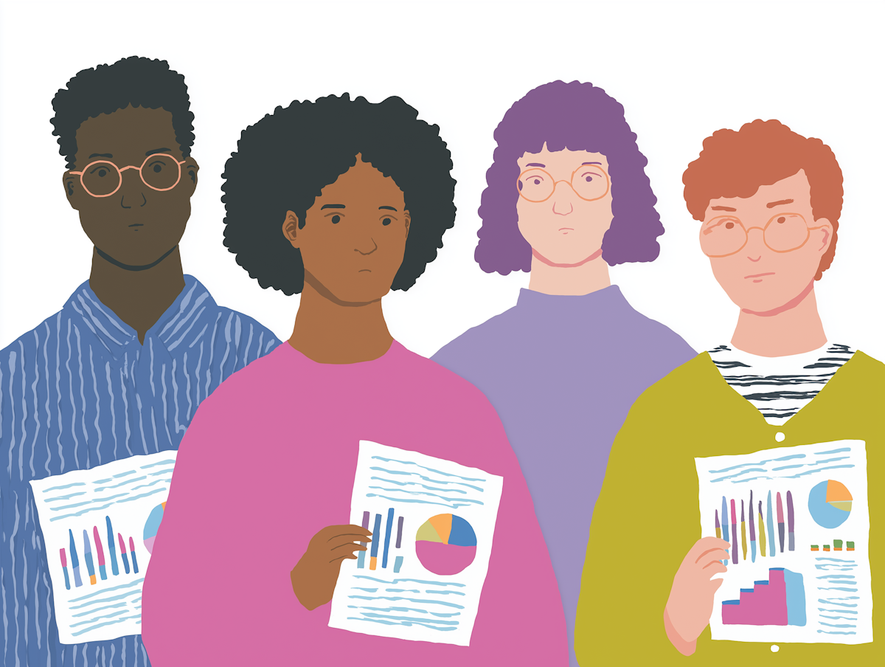
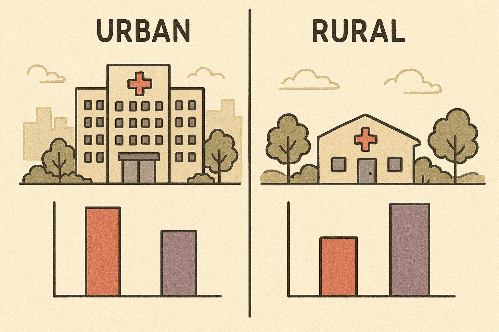
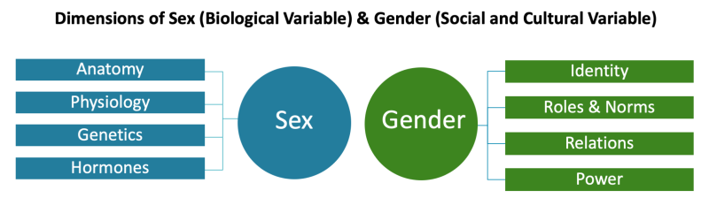
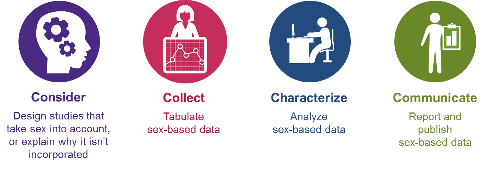

Beyond ‘Adjusting for Race:’ Data Equity in Clinical Research
HIP523
Associate Professor of Biostatistics
OHSU-PSU School of Public Health
Knight Cancer Institute Biostatistics Shared Resource
Senior Statistician for APOM
Oregon Health & Science University
bit.ly/hip25_data_eq
2025-10-21
Learning Objectives
- Define data equity and its importance in statistical analysis
- Understand key considerations when including sex and race in multivariable models
- Examine best practices for incorporating sex as a biological variable (SABV)
- Explore the complexities of race and ethnicity in research through examples
- Discuss the role of social determinants of health (SDOH) in research]
At the conclusion of this activity, participants will be able to:
- Describe key concepts of data equity
- Describe common sources of bias in clinical research
- Identify appropriate biostatistical strategies to evaluate and address data inequities
What is Data Equity?

What is Data Equity?
The consideration of issues of power, bias, and discrimination in how data is collected, analyzed, interpreted, and used
Ensuring research benefits all populations equitably, especially those historically marginalized or underrepresented
Recognition that data is not neutral - it reflects existing social structures and biases
Allow community and patient participation in the research process, ensure trust and accessibility, with the goal of data sovereignty
Ultimately, data equity seeks to achieve just, unbiased, and actionable insights that enhance care quality and reduce disparities across diverse patient populations
Data Equity Principles

What is Equity-minded Research?
 Lummi.ai
“This leads us to the idea of Equity-minded Research. What does that look like in practice?” If you have an idea, or example, feel free to shout it out or put it in the chat.
Equity-minded Research
- Recognize and define systemic factors
- Inclusive data collection
- Representative sampling
- Contextual analysis
- Researchers must understand and reflect on their own biases and assumptions, as well as identity and experiences relative to others (positionality)
- Equitable interpretation
- Responsible reporting
Example: Sampling
Unrepresentative or skewed sampling can impact patient safety and outcome prediction
- A clinical risk assessment tool trained on a homogeneous population can mis-classify risk for underrepresented groups
- Rates of adverse events can be over- or under-estimated in certain groups
Common Data Equity Challenges
- Selection bias in sampling
- Ex: research in large academic medical centers may exclude rural populations or those with limited access to care
- Missing or incomplete data for certain populations
- Ex: language barriers may lead to incomplete data

- Limited access to data collection resources
- Ex: rural areas often lack infrastructure for comprehensive health data collection, resulting in urban-centric health policies
- Ex: limited availability of trained medical interpreters for patients who speak less common languages, resulting in incomplete information for these populations
Common Data Equity Challenges
Inappropriate aggregation of diverse groups
- Ex: collapsing Asian American subgroups can mask disparities, Haelle 2022, Association of Health Care Journalists
- Ex: prevalence of asthma varies across US-born vs non-US-born Latinos Marino, Fankhauser, Minnier, Lucas, Giebultowicz, Kaufmann, Hwang, Bailey, Crookes, Bazemore, and others (2023)
Lack of contextual variables
- Ex: a study on post-op complications that focuses only on patient-level factors such as age, comorbidities, and procedure type but fails to include hospital-level factors like nurse-to-patient ratios, availability of specialized perioperative care units, etc.
- Ex: a study on asthma prevalence may fail to account for air quality or housing conditions, focusing on individual-level factors but missing community-level determinants of health
Common Data Equity Challenges
Historical unethical studies and misuse of demographic data
- Many examples of unethical and harmful medical research on African Americans, leading to mistrust of medical research in the Black communities, leading to underpresentation in studies
- Tuskegee syphilis study is just one example Katz, Kegeles, Kressin, Green, Wang, James, Russell, and Claudio (2006)
Sex and Gender Considerations
NIH Sex and Gender
Sex and Gender in Statistical Models
Best Practices
- Distinguish between sex and gender variables
- Consider both biological and social factors
- Avoid binary assumptions
- Document missing data patterns
Common Pitfalls
- Conflating sex and gender
- Systemic lack of female representation (as well as omissions of transgender and intersex populations or persons with variations in sex characteristics)
- Assuming homogeneity within groups
- Overlooking interaction effects
- Missing intersectional perspectives
Sex as a Biological Variable (SABV)
Key Considerations
- Hormonal influences
- Genetic differences
- Physiological variations
- Life-cycle changes
Implementation Strategies
- Include adequate sample sizes for all sexes
- Test for sex-specific effects
- Report sex-disaggregated results
- Consider sex-based biological mechanisms
Sex as a Biological Variable (SABV)
NIH 4 Cs of Studying SABV
Race and Ethnicity in Research
Race is a social construct, commonly used in epidemiologic research to adjust for confounding. However, adjustment of race may mask racial disparities, thereby perpetuating structural racism.
“We adjusted for race”: now what? A systematic review… Swilley-Martinez, Coles, Miller, Alam, Fitch, Cruz, Hohl, Murray, and Ranapurwala (2023)
Race and Ethnicity: Critical Considerations
- Race is a social construct, not biological
- Substantial within-group variation
- Historical context of racial categories
- Context of discriminatory, sociocultural, or biological effects associated with race or SDOH variable used
- Intersectionality with other variables
Race and Ethnicity: Recommendations
- Use clearly defined categories, standard and not collapsed categories when possible
- Avoid collapsing categories of race with disparate health outcomes
- Avoid label “other”, use descriptive terms for collapsed categories
- Include ethnicity and ancestry information
- Clearly document data collection and classification methods
- If using race as a confounder, covariate, or adjustment variable, examine effect modification
- Acknowledge limitations
Urban Institute: Using Race and Ethnicity Data to Advance Health Equity
Social Determinants of Health
Design and data considerations
- Equitable sampling
- Missing data issues
- Granular data collection
- Standardization of variable definitions
- Document contextual factors
Analysis strategies
- Including SDOH variables in models can be complex
- Consider mediating effects or effect modification
- Consider correlation/collinearity
- Address missing data
Statistical Analysis Considerations
We adjusted for ….
Statistical Analysis, Adjustment
What does controlling for race (or sex, or gender, or SDOH) mean?
Adjustment, matching, stratification, etc. estimates effects over all strata to present an overall effect between exposure and outcome
When adjusting for the social construct of race, the adjusted effect estimate can be interpreted as the exposure-outcome relationship if racism did not affect the exposure
Pooled effects are weighted toward the larger group
Effect measure modification allows for different effects within groups (race, gender, sex, etc)
Model and Interpretation Considerations
Model Development
- Variable selection and coding
- Interaction testing
- Missing data patterns
- Model assumptions
Interpretation
- Effect modification
- Confounding
- Mediation
- Population-specific effects
Modeling Decisions
Bivariate Model: Y~X
- Use when asking “Does a demographic group receive access at different rates?”
Multiple Regression Y~X+Z
- Use when asking “Do similarly situated individuals access benefits at the same rate?”
Modeling Examples
Example 1: Postoperative Opioid Prescribing
- Research Question: Are there racial disparities in the amount of opioids prescribed to patients at discharge after a total knee arthroplasty?
- Outcome (Y): Total morphine milligram equivalents (MME) prescribed.
- Attribute of Interest (X): Patient race (e.g., Black vs. White).
Bivariate Regression Model:
lm(MME ~ patient_race, data = surgical_data)
Interpretation: “On average, do Black patients receive different MME prescriptions at discharge compared to White patients?”
Multiple Regression Model:
lm(MME ~ patient_race + preoperative_pain_score + procedure_time, data = surgical_data)
Interpretation: “Among patients with similar pre-op pain and procedure times, is there still a difference in MME prescriptions between Black and White patients?”
Discussion: Post-attribute Bias
Be cautious controlling for in-hospital patient-reported pain.
- If provider bias (related to race) leads to under-treatment of pain, the Black patient might report higher pain scores.
- Controlling for this pain score could incorrectly make a lower MME prescription seem medically justified, thereby masking the original bias.
- The bivariate model may be more appropriate.
- In this case the “race” effect could be the effect of systemic racism.
Post-attribute bias occurs when we control for variables that may be affected by the attribute we’re studying (a.k.a. post-treatment bias, intermediate variable bias, mediating variable bias)
Example 2: Use of Regional Anesthesia
- Research Question: Does insurance type influence whether a patient receives regional anesthesia (e.g., a nerve block) for shoulder surgery, which can reduce postoperative pain and opioid use?
- Outcome: Receipt of nerve block (Yes/No, a binary outcome).
- Attribute of Interest: Insurance type (e.g., Private vs. Medicaid).
Bivariate Regression Model:
glm(nerve_block ~ insurance_type, family = "binomial", data = ortho_data)
Interpretation: “On average, are patients with Medicaid less likely to receive a nerve block than patients with private insurance?”
Multiple Regression Model:
glm(nerve_block ~ insurance_type + patient_asa_score + hospital_type, family = "binomial", data = ortho_data)
Interpretation: “Controlling for patient health status (ASA score) and the type of hospital (e.g., teaching vs. non-teaching), are Medicaid patients still less likely to receive a nerve block?”
Discussion: Omitted Variable Bias
- Failing to control for patient health status (a key confounder) could lead to incorrect conclusions if, for instance, Medicaid patients in your sample have more comorbidities that contraindicate a nerve block.
- Insurance is associated with ASA score
- Hospital type may also be related to use of nerve block or insurance type rates
- The full model provides a more complete picture.
Example 3: 30-Day Hospital Readmission
- Research Question: Are patients with Limited English Proficiency (LEP) at higher risk for readmission after major abdominal surgery?
- Outcome: Readmitted within 30 days (Yes/No).
- Attribute of Interest: LEP status (e.g., needs interpreter vs. English proficient).
Bivariate Regression Model:
glm(readmitted ~ lep_status, family = "binomial", data = surgery_discharge_data)
Interpretation: “Do patients with LEP have a higher 30-day readmission rate?”
Multiple Regression Model:
glm(readmitted ~ lep_status + surgical_complexity + length_of_stay, family = "binomial", data = surgery_discharge_data)
Interpretation: “After accounting for how sick the patient was (surgical complexity, length of stay), does LEP status remain a predictor of readmission?”
Discussion: Disparities
- This highlights the difference between asking “are there disparities?” (bivariate) versus “what are the mechanisms?” (multivariable). The first question is often the most important for identifying a problem that needs fixing.
- The disparity in readmission may be caused by inadequate discharge communication, which is part of the mechanism of inequity for LEP patients.
Using Regression to Detect Discrimination
- Cannot definitively prove discrimination
- Cannot definitively prove lack of discrimination
- Unmeasured variables may explain disparities
- Need robust research design for causal claims
Best Practices for Reporting
- Sex and Gender Equity in Research (SAGER) Guidelines Heidari, Babor, De Castro, Tort, and Curno (2016)
- Race, ethnicity guidelines often journal or study design specific Flanagin, Frey, Christiansen, of Style Committee, and others (2021)
Updated Guidelines
Perspective

Data and data projects can only be made more equitable if work teams are diverse, reflect a variety of experiences, and trained to foreground empathy and equity in their work.
Urban Institute’s Do No Harm Guide: Additional Perspectives on Data Equity
References
Braveman, P. (2023). The social determinants of health and health disparities. Oxford University Press.
Flanagin, A., T. Frey, S. L. Christiansen, et al. (2021). “Updated guidance on the reporting of race and ethnicity in medical and science journals”. In: Jama 326.7, pp. 621-627.
Heidari, S., T. F. Babor, P. De Castro, et al. (2016). “Sex and gender equity in research: rationale for the SAGER guidelines and recommended use”. In: Research integrity and peer review 1, pp. 1-9.
Katz, R. V., S. S. Kegeles, N. R. Kressin, et al. (2006). “The Tuskegee Legacy Project: willingness of minorities to participate in biomedical research”. In: Journal of health care for the poor and underserved 17.4, pp. 698-715.
Marino, M., K. Fankhauser, J. Minnier, et al. (2023). “Disaggregating Latino nativity in equity research using electronic health records”. In: Health Services Research 58.5, pp. 1119-1130.
Retzer, A., B. Ciytak, F. Khatsuria, et al. (2023). “A toolkit for capturing a representative and equitable sample in health research”. In: Nature Medicine 29.12, pp. 3259-3267.
Swilley-Martinez, M. E., S. A. Coles, V. E. Miller, et al. (2023). ““We adjusted for race”: now what? A systematic review of utilization and reporting of race in American Journal of Epidemiology and Epidemiology, 2020-2021”. In: Epidemiologic reviews 45.1, pp. 15-31.
Venkateswaran, N., J. Feldman, S. Hawkins, et al. (2023). “Bringing an equity-centered framework to research: Transforming the researcher, research content, and practice of research”.
Thank you!
Contact info:
- Jessica Minnier: minnier@ohsu.edu
This talk info:
- Slides: bit.ly/hip25_data_eq
- Code for these slides are on github, with links to other talks and course materials: jminnier/talks_etc
- Uncited art from lummi.ai
Social Determinants of Health (SDOH)
US Dept of Health & Human Services: Healthy People 2030